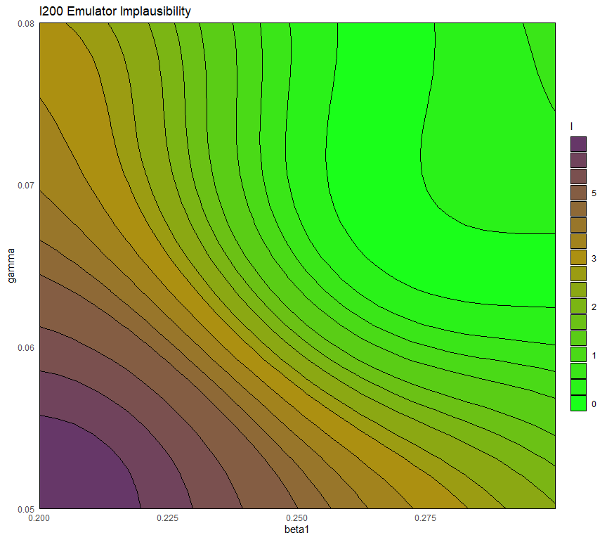
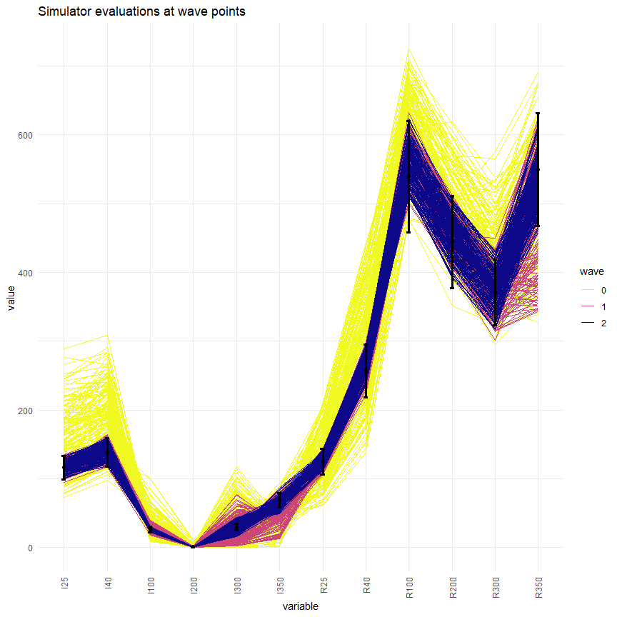

9 Multi-wave visualisations
In this last section we present two visualisations that can be used to compare the non-implausible space identified at different waves of the process.
The first visualisation, obtained through the function wave_points, shows the distribution of the non-implausible space for the waves of interest. For example, let us plot the distribution of parameter sets at the beginning, at the end of wave one and at the end of wave two:

Here initial_points are in yellow, new_points are in green and new_new_points are in purple. The plots in the main diagonal show the distribution of each parameter singularly: we can easily see that the distributions tend to become more and more narrow wave after wave. In the off-diagonal boxes we have plots for all possible pairs of parameters. Again, the non-implausible region identified at the end of each wave clearly becomes smaller and smaller.
The second visualisation allows us to assess how much better parameter sets at later waves perform compared to the original initial_points. Let us first create the dataframe wave2:
new_new_initial_results <- setNames(data.frame(t(apply(new_new_points, 1,
get_results, c(25, 40, 100, 200, 300, 350),
c('I', 'R')))), names(targets))
wave2 <- cbind(new_new_points, new_new_initial_results)We now produce the plots using the function simulator_plot:

We can see that, compared to the space-filling random parameter sets used to train the first emulators, the new parameter sets are in much closer agreement with our targets. While the initial_points did not match any of the targets, we can see that at the end of wave two, we have several targets matched (I25, I40, R25, R40, R100, R200). Subsequent waves, trained on the new parameter sets, will be more confident in the new non-implausible region: this will allow them to refine the region and increase the number of targets met.
simulator_plot has the argument normalize, which can be set to TRUE to rescale the target bounds in the plot. Similarly, the argument logscale can be used to plot log-scaled target bounds. Explore these options and get visualisations that are easier to interpret.